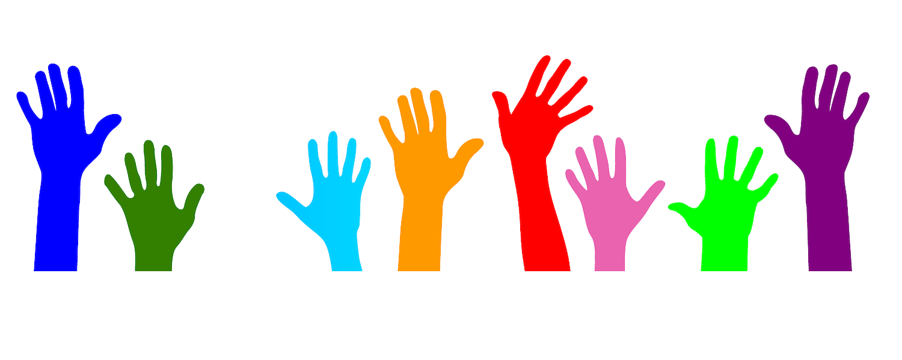

Donate
Greater Bridgeport Community Enterprises works everyday with the goal to expand employment opportunities for low-income Bridgeport residents while growing greener and more sustainable communities. In order to reach these goals, we need your support. Your donations will help us improve revenues for our social impact ventures. For the Park City Green mattress recycling operation, contributions will help pay for equipment upgrades such as a faster and more efficient pallet shearer and baler; and for a metal compactor that will increase commodities revenues twelve times! Also, we will be able to expand certification and in-service training programs in support of our employees.
“Working while attending college has been difficult over the years. Greater Bridgeport Community Enterprises
has provided me with the wonderful opportunity to put my knowledge to work, and to obtain the working
experience needed in my future accounting career. Since I’ve started, I have obtained my bookkeeping
certification which is one step closer to becoming more self-sufficient and coming off of public assistance.
GBCE provides a platform to those who would otherwise be overlooked.”
~ Erika, GBCE Office Manager & Bookkeeper